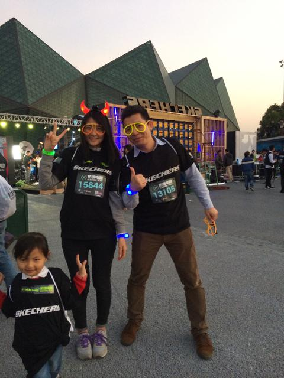
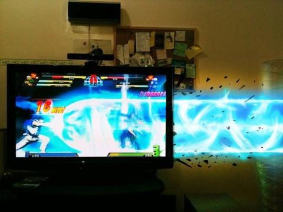
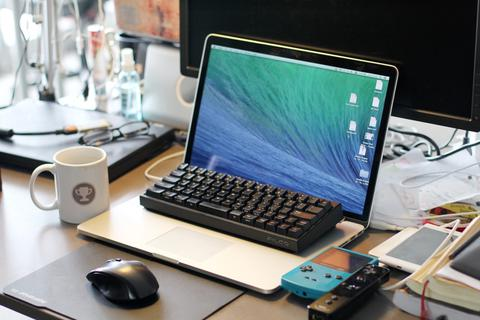
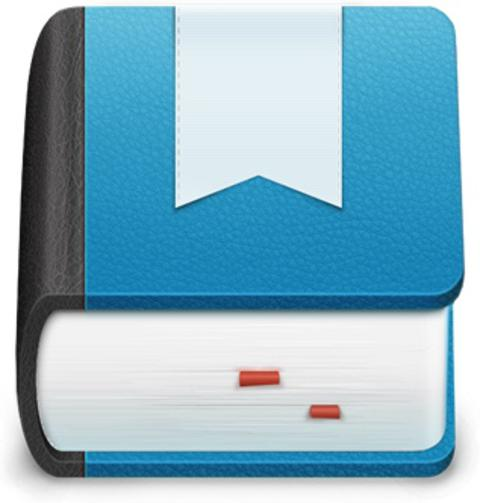

<!DOCTYPE html><!--     __  _____    ____  ____  __  ____ __ _______   __--><!--    / / / /   |  / __ \/ __ \/ / / / //_// ____/ | / /--><!--   / /_/ / /| | / / / / / / / / / / ,<  / __/ /  |/ /--><!--  / __  / ___ |/ /_/ / /_/ / /_/ / /| |/ /___/ /|  /--><!-- /_/ /_/_/  |_/_____/\____/\____/_/ |_/_____/_/ |_/--><html lang="zh"><head><meta charset="utf-8"><title>第1頁 - SolidZORO</title><meta name="description" content="黑魔法師。"><meta http-equiv="X-UA-Compatible" content="IE=edge"><meta name="viewport" content="width=device-width, initial-scale=1, maximum-scale=1, user-scalable=no"><meta name="renderer" content="webkit"><link rel="stylesheet" href="../themes/ryu/assets/css/style.css"><script src="../themes/ryu/assets/js/app.js"></script><meta name="apple-mobile-web-app-title" content="SolidZORO"><link rel="apple-touch-icon-precomposed" href="../themes/ryu/assets/img/favicon/favicon_144.png" size="144x144"><link rel="shortcut icon" href="../themes/ryu/assets/img/favicon/favicon.ico"></head><body class="katana katana-list katana-page"><div class="saya-header"><div class="saya"><div class="logo"><a href="../index.html" title="SolidZORO" alt="SolidZORO">首頁</a></div><div class="nav"><ul><li><a href="../about.html">關於</a></li><li><a href="../projectc.html">專案</a></li></ul></div></div></div><div class="saya-container"><div class="saya"><div class="list"><div class="item"><h2 class="title"><a href=".././day/2014-12-13-162904.html">熱波電跑 2014</a></h2><div class="date">2014年 12月 13日</div><div class="typo clearfix"><div class="banner-thumb"><a href=".././day/2014-12-13-162904.html"></a></div><p>今天不知道怎麼的，還沒做好出門的準備，就被人帶到大運參加熱波電跑（ElectricRun），算上我家兩女王，一共4人，到場直接向主辦方直接索要了4張價值800RMB的票就溜進去了，賺到了啊（笑）。到場的人真是超級多的，應該不下5000人，換購衣服的隊伍從下午5點排到了晚上7點，實在有夠久。</p>

<p>在進去前我還在猜測這不會就是去跑步把？果然進去了就給發衣服和螢光設備，果然是跑步，而且還只跑5KM。然後發現天空上到處是航拍的飛機，我想應該是等到晚上8點開跑時，從天上來一次壯觀的覓覽錄影吧，不曉得過了今天網上會不會有覓覽視頻。</p>

<p>另外我看了一下主題介紹，這個所謂的熱波電跑實際上就是讓一幫人晚上帶著發光的設備在跑步，到了晚上的效果就是到處到處到處到處⋯⋯跑到上每一個角落都在發光，應該很有TRON的那種現代感吧？但是，現實和我想的出入實在太大，國人還實在不會hi，而且裝備BiG不夠高，螢光效果太弱了，TRON的期待也就隨之破滅。</p>

<p>最大的吧台有幾個DJ（Dinner Jacket)）在做mix，做得非常不錯，音效也不錯，這都不關鍵，吸引我的焦點是他們身後的大螢幕，各種digital、byte style的效果片段，節奏與音樂配合得天衣無縫，我想我看到的這種景象應該就叫VJ（Video Jockey）吧。</p>

<p>VJ以前在網上經常聽，玩DJMAX和Ez2DJ的時候也時常見到，而今天身臨其境算是真正認識了VJ這個東西。</p>

<p>btw：「深夜食堂」第三季度出來了，在冬天來臨之際看這部溫馨的食材片真是一件美好的事情。</p></div></div><div class="item"><h2 class="title"><a href=".././day/2014-12-12-163714.html">命名</a></h2><div class="date">2014年 12月 12日</div><div class="typo clearfix"><p>今天在在星巴克和兩程序員在聊做站的問題，他們想合作用nodejs開發一個視頻種子下載站。初衷是：</p>

<ul>
<li>學習nodejs</li>
<li>學習正則</li>
<li>研究爬蟲</li>
</ul>

<p>但是卡在這些問題前面的卻是一些非技術相關的問題，比如不知道網站叫什麼，程序叫什麼，甚至不曉得用哪一個nodejs框架開發。</p>

<p>我想，這是大多數程序員做一個程序或站點會遇到的問題，而且不少會卡在這步沒有辦法進行下去。</p>

<p>我覺得這實在顯得沒有必要，就程序名字來說，當時我看了眼星巴克杯子上的女神建議他們在行星中選一個熟知的星球，找到這個星球的守護女神。</p>

<p>我相信以古希臘人民的尿性，會給大多數星球配一個守護女神，那麼，這個星球名可以做引擎（或內核）的名字，守護女神的名字可以做軟件的名字。</p>

<p><a href="../day/2014-12-12-163714.html" class="read_more">閱讀全文</a></p></div></div><div class="item"><h2 class="title"><a href=".././day/2014-12-12-052614.html">關於大數據的一點點思考</a></h2><div class="date">2014年 12月 12日</div><div class="typo clearfix"><p>最近在用一個公交App，這個App可以告訴什麼車還在跑，跑到什麼地方了，還有多久才到你這裏。</p>

<p>這一切都是通過GPS定位或BUS站台NFC定位實現的，這意味著要為成百上千個BUS、BUS站台部署硬件裝置。</p>

<p>那有沒有什麼方法在不部署硬件的前提下做這件事情呢？</p>

<p><strong>排除一切客觀因素，我覺得應該是有的。</strong></p>

<p>但是這件事情在國內可能只有幾個大公司能做，比如騰訊或360，也就是說App裝機量足夠大的公司都可以做（隱私問題先不討論）。</p>

<p><a href="../day/2014-12-12-052614.html" class="read_more">閱讀全文</a></p></div></div><div class="item"><h2 class="title"><a href=".././day/2014-12-12-050844.html">睡5個小時就好</a></h2><div class="date">2014年 12月 12日</div><div class="typo clearfix"><p>最近每天都睡5個小時，開始幾天感覺要崩潰了，但現在似乎有變得慢慢適應了。</p>

<p>每天都是很準時的每天凌晨2點睡下，早上7點起來，到了公司馬上打一杯咖啡慢慢喝掉，一天下來感覺還是很精神的，大家都說冬天容易困，不曉得為什麼我的冬天很精神。</p>

<p>科學上雖說最好睡上8小時，但是我覺得睡夠了就好。以前我83KG的時候是絕對做不到睡5小時的，那時晚上10點睡到第二天8點都要覺得困，最近吃得少了，體重驟降到75KG，感覺身體輕鬆了很多，健康了很多。</p>

<p>當然啦，削減掉睡眠時間主要還是因為忙，而且現在感覺時間真的很是寶貴，沒有什麼理由像以前那樣「讓時間過快的流逝掉」。</p></div></div><div class="item"><h2 class="title"><a href=".././day/2014-12-09-160245.html">簡體字 與 繁體字</a></h2><div class="date">2014年 12月 09日</div><div class="typo clearfix"><p>已不記得我是從什麼時候開始，在生活中使用繁體字，閱讀繁體中文的書籍，系統菜單要選用繁體中文。</p>

<p>最初大體上是因為輸入法裡出現了簡繁切換功能，我覺得特別，就開始使用，也就是因為這個原因，我在Google上輸入的keyword會返回很多台灣站點的網站，我從台灣的網站內容中學到很多不同的詞彙，比如最典型的：菠蘿 > 鳳梨、薯片 > 洋芋片、宇航員 > 太空人⋯⋯</p>

<p>而又由於平時搜索電腦詞彙較多，很自然地接觸到了很多台灣的電腦詞彙，比如 內存 > 記憶體、硬盤 > 硬碟、打印機 > 印表機、文件夾 > 檔案夾⋯⋯</p>

<p>一開始真的是覺得繁體字以及台灣詞彙很特別，身邊都沒人懂，沒事用一用就真的覺得自己很特別的樣子（02～03年的時候還沒有裝逼一詞），後來我在研究電腦輸入法的時候，偶然被帶到北大中文論壇， 「<a href="http://www.pkucn.com/forum-29-1.html">中文信息處理板塊</a>」 ，在上面看了一些帖子以及幾位高人對中文的深度研究後，我才瞭解到，文字到底是個什麼東西，為什麼有繁體，在有了繁體後，簡體為什麼還要出現等基本知識。</p>

<p>在北大中文論壇，我本來想與人討論輸入法的問題，但後來發現我的數學功底太差，隱馬爾可夫模型不是當時我那個年齡能玩明白的東西，於是便跑到隔壁的「字研究」板塊閒逛，逛了好幾天我慢慢知道了一些關於「簡繁於字」的差別，比如「裡」和「裏」雖然用起來沒差，但卻有一些微妙的區別，類似的還有「麵、面」或「幹、干、乾」、「鸡、雞、鷄」。</p>

<p>然後⋯⋯（這篇感覺寫起來會很長，還是先睡一覺起來再寫吧，待續）</p></div></div><div class="item"><h2 class="title"><a href=".././day/2014-12-06-193721.html">HADOUKEN的0.4版</a></h2><div class="date">2014年 12月 06日</div><div class="typo clearfix"><div class="banner-thumb"><a href=".././day/2014-12-06-193721.html"></a></div><p>嗯，怎麼說呢，想到HADOUKEN的0.4版要做的功能就頭皮發麻。</p>

<p>到底生成tag用什麼方法好呢？所有文章的tag我都去重提去了，難道要每個tag給遍歷一次所有文章嗎？或者等下我去看看hexo是怎麼做的。</p></div></div><div class="item"><h2 class="title"><a href=".././day/2014-12-01-151832.html">麻煩給我一個用OSX的理由</a></h2><div class="date">2014年 12月 01日</div><div class="typo clearfix"><div class="banner-thumb"><a href=".././day/2014-12-01-151832.html"></a></div><p>我是一個工程師，日常的工作中，超過80%的時間被設計、代碼、服務器維護所佔據。從一開始接觸電腦到工作這些年，都在用著Windows，算下來足足有14年。</p>

<p>而萌生買MacBook的念頭並不是最近才有的，從早些年嘗試吃一吃黑頻果到現在已有幾年時間，與其說入手MacBook，還不如說是買OSX送了台MacBook來得恰當，MacBook硬件本身我真沒有特別在意。</p>

<p>不過後來我還是有花了幾小時在線上做功課，最後買了一台15英吋的rMBP，512G<em>SSD，16G</em>RAM，有帶獨立顯卡，算高配。買東西是個大事，既然要買就要有買了用一輩子的覺悟。</p>

<h2>首先，講講我之前都用Windows在幹嘛：</h2>

<ul>
<li><strong>Photoshop</strong>，處理一切像素設計。</li>
<li><strong>Illustrator</strong>，處理一切矢量設計。</li>
<li><strong>SublimeText</strong>，一旦依賴，就很難離開，有他我連Vim都不愛用了。</li>
<li><strong>git</strong>，協同開發必備，沒什麼好說的。</li>
<li><strong>xShell</strong>，Windows上最好的免費SSH客戶端。</li>
<li><strong>FileZilla</strong>，Windows上最好的免費FTP客戶端。</li>
<li><strong>executor</strong>，快捷啟動，比較複雜，免費，國內有類似的叫Altrun。</li>
<li><strong>Listary</strong>，快速定位文件路徑，免費，用了可延長你的壽命。</li>
<li><strong>OneNote</strong>，多平台同步便簽，ORC光學識別圖片上的文字，免費。</li>
<li><strong>bat</strong>，windows自家的批處理，買系統免費送的。</li>
</ul>

<p>老實說，除去Chrome和QQ這種必備App之外，以上的清單即是我在Windows上的生產力工具。有很多都是開源免費的，但是功能絕不含糊，瑞士軍刀級別，指那打那，熟練起來提升效率顯著，我有時候甚至懷疑，如果離開了executor和listary，我的工作效率是否會跌個500%？</p>

<p>那我需要OSX嗎？有什麼事情非得在上面做嗎？當然沒有！Windows對我來說已足夠好了，在強調一次，我不在意MacBook這台機器，而看重的是OSX。</p>

<p><a href="../day/2014-12-01-151832.html" class="read_more">閱讀全文</a></p></div></div><div class="item"><h2 class="title"><a href=".././day/2014-11-29-144629.html">深圳書城打折未眠夜</a></h2><div class="date">2014年 11月 29日</div><div class="typo clearfix"><div class="banner-thumb"><a href=".././day/2014-11-29-144629.html"></a></div><p>圖：眾動物書中，犀牛書真是翹楚，那麼厚厚厚一本。</p>

<p>因為前兩個星期看到有68折活動日的消息，所以今天特別去了。</p>

<p>其實也沒買多少，本來想買：</p>

<ul>
<li><strong>紫龍書</strong>（編譯原理第三版，想了一下，放棄了，我不是做編程的可能也實在看不下去。。）</li>
<li><strong>犀牛書</strong>（Javascript大全，發現之前kindle打折買了，而且沒幾次翻開，就又沒買。）</li>
</ul>

<p>最後最後，就買了本RESTfull API設計相關的動物書，。別的書都是關於商業奇談的，感覺想寫出優秀的站點，做出優雅的用戶體驗還得從平實的方向入手才對，總是互聯網、程序員思維更本行不通。</p></div></div><div class="item"><h2 class="title"><a href=".././day/2014-11-29-120229.html">調適麻煩的nodejs</a></h2><div class="date">2014年 11月 29日</div><div class="typo clearfix"><p>昨天因為想要用nodejs寫一個dayone日誌生成html的工具，弄了很久，不得要領，真是難過，而且奇怪的debug方式及其麻煩，簡直是欺負我這種既沒Javascript基礎且又是初次接觸nodejs的人。</p>

<p>而且之前我還想用gulp寫的，但後來發現gulp是個大坑，而且功能遠沒nodejs那麼豐富靈活，所以才決定用nodejs來寫。</p>

<p>寫了幾個小時，實在寫不下去了，最後搞得連覺都沒睡好，真是自找麻煩。</p></div></div><div class="item"><h2 class="title"><a href=".././day/2014-11-25-145538.html">小朋友的遊戲</a></h2><div class="date">2014年 11月 25日</div><div class="typo clearfix"><div class="banner-thumb"><a href=".././day/2014-11-25-145538.html"></a></div><p>今天晚上回家吃完飯，忽然感覺應該教女兒yuki一些知識，但是教什麼呢？繪本已經都看過了，塗鴉遊戲也已玩膩了。</p>

<p>然後隨手打開Appstore，忽然看到以前購入的遊戲「body」被打上 (RED)的公益標示在推廣，這個遊戲當時玩就覺得蠻好的，很多知識點，大體上是一個在講人體骨骼與各器官運作機制的教科書類遊戲。</p>

<p>我覺得這個蠻適合用來教小朋友的，就開始玩起來。講到鼻子與眼睛的時候感覺Yuki特別的有在認真聽。因為眼睛章節透過ipad前置攝像頭可以模擬真實的視覺效果，像是ipad長了眼睛在看我們。</p>

<p><a href="../day/2014-11-25-145538.html" class="read_more">閱讀全文</a></p></div></div><div class="item"><h2 class="title"><a href=".././day/2014-11-24-145158.html">ole 法式忌廉芝士麵包</a></h2><div class="date">2014年 11月 24日</div><div class="typo clearfix"><div class="banner-thumb"><a href=".././day/2014-11-24-145158.html"></a></div><p>晚上剛下班就和冬玉和小李跑世界之窗的ole買法式忌廉麵包（寶龍已沒口福的去拿電源了）。</p>

<p>他們入手後都驚訝那麼大一塊，真是有夠超值。但似乎小李沒買這款，買的是另外一款便宜2塊錢的小改款，也就是沒有芝士和牛油的麵包，所以他吃起來就沒有我們那麼幸福（但人家有進口台灣牛乳啊做搭配啊）。</p>

<p>吃著那個厚厚的芝士和偶有的橘子粒真是幸福感爆表COMBO 99了。</p>

<p>不過這次沒能買到剛剛出爐的忌廉麵包，而且服務員的態度有夠差，居然讓一位素不相識的顧客阿姨（應該是服務員的朋友）給我們包裝，一開始我不知道阿姨是給我們裝麵包，以為是她要自己買，把我的袋子抓去那一瞬間真是有嚇到我。</p>

<p>下次嘛，還是要找時間到歡樂海岸的ole吃才對，哪裡的法式忌廉麵包很好賣，所以都是不斷在出爐，吃起來的口感才最正。</p>

<p>另外就是，吃忌廉麵包最好還是配牛奶或紅茶，而且，千萬不可以吃光一整塊，不然就只有等著哭哭。</p></div></div><div class="item"><h2 class="title"><a href=".././day/2014-11-23-153215.html">橫山光輝和他的『三國志』</a></h2><div class="date">2014年 11月 23日</div><div class="typo clearfix"><div class="banner-thumb"><a href=".././day/2014-11-23-153215.html"></a></div><p>今天偶然發現東映的三國不是橫山光輝畫的，然後特意到了youtube找了橫山光輝的「三國志』，哇勒，風格大變，有點類似『中華小當家』的風格，也就是更Q了。這點讓我很喜歡。</p>

<p>這部『三國志』動畫片一共47集，而我現在才看到21集，如果不是昨晚弄GAE goagent通宵了，可能會看更多。</p>

<p>無論如何，週三前要看完他。然後就是看橫山光輝的『織田信長』，再然後我想把他的『德川家康』和『武田信玄』也看了，忽然覺得橫山老師很厲害，一個人居然畫了那麼多忠於歷史原著的動漫。只可惜他老人家04年家中發生大火，被燒死了，由於古代戰爭畫面也有很多縱火畫面，所以每次看到縱火的畫面都會想到橫山老師，真是悲慘的命運啊。</p></div></div><div class="item"><h2 class="title"><a href=".././day/2014-11-22-180721.html">跟Yuki到圖書館看畫冊</a></h2><div class="date">2014年 11月 22日</div><div class="typo clearfix"><p>感覺Yuki和我在一起的時候會變得很聽話，因為我總是躲著她，然後在她找到我的時候嚇唬她會被壞人抓走，這樣她只好乖乖的跟在我屁股後面了。</p>

<p>btw：晚上回來發現MBPR屏幕上有個被壓壞的小點，大概是1px那麼大，不是壞點，是磕碰，黑屏的時候反白，白屏的時候變黑，在中央偏右的位置，非常礙眼，好心情都跑光了。才買不到1個月就這樣，以後肯定還有可怕的事情要發生，只好祈禱上帝對我好一點，不然只有哭哭了。</p></div></div><div class="item"><h2 class="title"><a href=".././day/2014-11-22-135014.html">買下dayone for mac</a></h2><div class="date">2014年 11月 22日</div><div class="typo clearfix"><div class="banner-thumb"><a href=".././day/2014-11-22-135014.html"></a></div><p>忽然感覺這個app可以好好用下，打算回家在Mac上也買一個，話說我的dayone在iOS上是限免時候買的，感覺賺到了，mac居然要$10，感覺蠻貴的。賣完一張gift card就沒了，對了，這個dayone的文件會存到iCloud哪裡啊？在越獄的iPad上都沒看到。看來還得好好研究看看，做一個部署到github的小工具。</p></div></div><div class="item"><h2 class="title"><a href=".././day/2014-11-15-172710.html">摩卡</a></h2><div class="date">2014年 11月 15日</div><div class="typo clearfix"><p>對於一個不經常喝咖啡的人來說，速溶自然是最好的選擇，因為沒有參照物對比，就談不上對咖啡要有什麼特別的要求了。</p>

<p>然而，如果對咖啡稍微有點追求的話，我覺得「摩卡」會是個好選擇。
因為摩卡相較之一般人來說，是唯一一種喝起來還算中性的咖啡，並且在一天內的任何時段都可以喝的咖啡，不像拿鐵一樣多糖，也不像美式那麼難以入口。</p>

<p>總之，摩卡是中庸之道的首選，沒什麼好說的。</p></div></div></div><div class="pagination"><a href="../p/1.html" class="current"><strong>1</strong></a><a href="../p/2.html" class="normal"><span>2</span></a><a href="../p/3.html" class="normal"><span>3</span></a></div></div></div><div class="saya-footer"><div class="saya"><div class="copyright">© 2014&nbsp;<a href="http://solidzoro.com" target="_blank">SolidZORO</a>&nbsp;BY&nbsp;<a href="https://github.com/SolidZORO/HADOUKEN" target="_blank">HADOUKEN</a></div><div class="hm hidden"></div><script type="text/javascript">var _hmt = _hmt || [];
(function() {
  var hm = document.createElement("script");
  hm.src = "//hm.baidu.com/hm.js?63392a0ec51d4ad23453b82650af1329";
  var s = document.getElementsByTagName("script")[0];
  s.parentNode.insertBefore(hm, s);
})();</script></div></div></body></html>